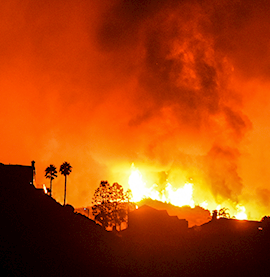
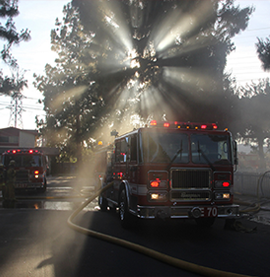
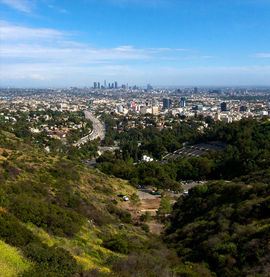

<app-nav-bar></app-nav-bar>
<br><br><br>
<h1>Избери град каде што сакаш да помогнеш</h1>
<br><br><br>
<app-map></app-map>


<footer>
    <br><br>
    <app-firstdialog></app-firstdialog>
<br><br>

<div class="flex">
<div class="item">
<p>Шумските пожари настануваат во области од Македонија кои што се покриени со лесно запалива вегетација, обично во руралните области. </p>

</div>
<div class="item"></div>
<div class="item"></div>
</div>

<br><br><br>
<button mat-stroked-button>Пријави се за пренос на волонтери со возило</button>
</footer>
<router-outlet></router-outlet>
